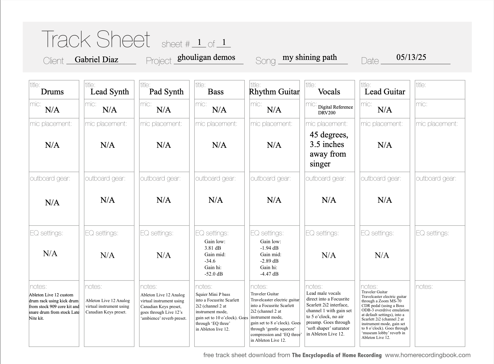
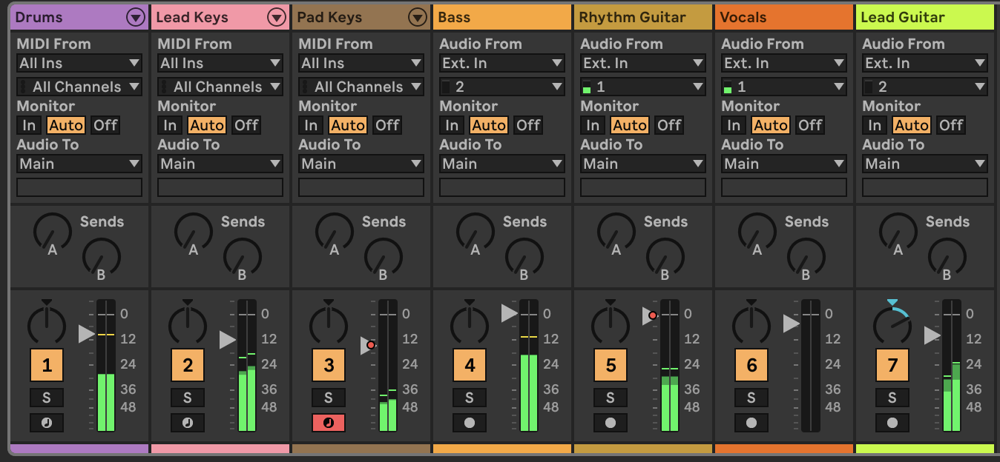

(The first clip is the song before mixing, the second one is after mixing).
hI've been using the class assignments as opportunities to flesh out some song ideas I've been holding onto for a while. I've had an instrumental for this song that I first came up with during a concurrent enrollment class in my senior year of high school. I borrowed a computer with Live 9 Suite and haven't been able to edit that file since. I took it upon myself to re-record everything, matching the original sounds as best as I could. A lot has happened since first coming up with this instrumental, and I never really got around to writing lyrics to go with it. It wasn until a relative's recent passing that I stumbled across this idea again, as I tried my hand at writing a song for them. Listening back to this, all things considered, it felt right to lend this instrumental for this lyrical theme. While even that conclusion informed the lyrics, this musical concept has gone through a lot before the final version found here. This is "my shining path" and the track sheet is listed below:
 
The song, even before the lyrics, was meant to feel calm yet melancholic at the same time.
I'd have to say that the biggest driving forces for the instrumental are the rhythm guitar
and the bass, since they both have their own nuanced melodies that seem to complement one another.
This is largely why I ended up leaving both instruments at 0 dB, although I had to automate
the rhythm guitar later (for reasons I'll soon explain). The drums are also quite vital
to the song, but I just foudn them too 'snappy' to leave them at 0dB. The lead guitar is
a minor detail when compared to everything else, so I brought it down significantly.
This is also the only track I panned since everything sounded good enough balanced, and
panning that lick at the end felt like it would give it a surprise texture. Both keys were
brought down significantly for a 'softer' feel (I experiemnted with automating the pad
volume a bit but it didn't work out as I expected). Last but not least, I brought
the vocals down a bit just because I wanted to leave enough room for the instruments.
I typically struggle with my vocal recordings being too loud to where the instruments
get a bit drowned out, so I did this simply to find balance.
Of course, I did what I ususally start off doing, which is to EQ the bass.
I was finally able to buy a Squier Mini Percision bass the other day, so this
the first original track forthis class where I've recorded myself playing bass.
The P bass had a good amount of high end so I mostly lowered all of it and really
cranked up the lower ends. The only thing that bugged me a bit was my playing.
Speaking of performing live instruments, my experience with the rhythm guitar really
highlighted the importance of getting things right the first time. This is a part that
I play with fingerpicking, which got a bit tough for me to maintain without keeping the
dynamics steady. This was my first time recording fingerstyle in a while, and because my
dynamics came out weird, I had automate the track volume afterwards. I did like, however,
that the guitar in the opening starts soft but when that line reappears in the chorus,
it comes up louder.
The guitar solo was a very last-minute decision that simply felt 'proper.'
I already knew that I wanted it to have that Boss overdrive sound which is why
I ran it through the Zoom emulation pedal before the interface, but it didn't dawn
on me until hearing the song back that giving it a bit of reverb would make it sound
a bit less dry.
Last but definitely not least, I focused on the vocals. I'm not too familiar with
how to treat vocals but I definitely wanted them to sound 'soft and warmer'
(although I felt like I sang relatively soft). After playing around, I settled
on using a saturator effect (which I believe is essentially similar to a compressor).
With the effect, it felt like only parts of that track were being brought down,
which honestly felt right for the song.